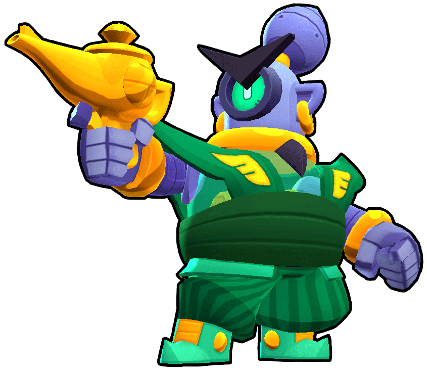
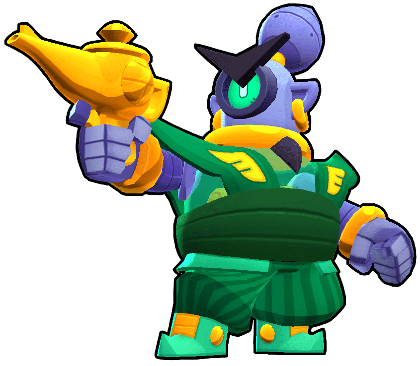

Общее
Рико имеет нормальную скорость передвижения, низкий уровень здоровья, и умеренный урон. Его атака — пули, которые могут отскакивать от стен и пролетать на 1.67 клеток больше. Эта способность может позволить Рико наносить урон врагам в укрытиях при правильном прицеливании. Его Супер — увеличенные пули, которые могут прошивать врагов. С Звёздной силой «Суперотскок» пули при отскоке изменяют свою внешность и наносят больше урона. А со Звёздной силой «Отступление машин» Рико при 40% здоровья и меньше двигается быстрее. Гаджет «Шаромёт» запускает по две пули в 8 сторон от Рико, которые могут прошивать врагов, как и Супер, рикошетя. С гаджетом «Надувной замок», Рико может исцеляться с помощью пуль, основной атаки, когда они отскакивают.
Основная атака Рико — очередь из нескольких пуль, которые могут отскакивать от стен. Это действительно полезно в ситуациях, когда Рико сможет поразить врагов в укрытиях, не получая урона в ответ. С каждым отскоком снаряды получают 1.67 клетки дополнительной дальности.
Супер: Коронный удар
 
